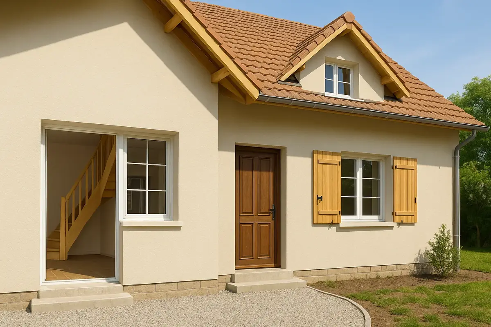

Nos métiers · Menuiserie
Menuiserie et bibliothèque sur mesure à Paris
Bibliothèques sur mesure, dressings, placards, portes intérieures et boiseries : nous concevons, fabriquons et posons vos menuiseries intérieures à Paris et en Île-de-France.

Interventions
Ce que nous réalisons
- Bibliothèques sur mesure, murales ou en niche
- Dressings, placards et rangements sous combles
- Portes intérieures, blocs-portes et portes coulissantes
- Restauration de portes moulurées et de boiseries anciennes
- Habillages, meubles de salle de bain et plans de travail
Bibliothèque sur mesure
Une bibliothèque sur mesure, pensée pour la pièce
Une bibliothèque sur mesure occupe exactement l’espace disponible : un mur entier du sol au plafond, le tour d’une porte ou d’une fenêtre, une alcôve de part et d’autre d’une cheminée, le dessous d’un escalier ou un rampant. Elle tient compte des murs rarement droits des appartements anciens, des plinthes, des prises et des radiateurs.
Nous définissons avec vous la profondeur, l’espacement des étagères selon ce qu’elles porteront, la part de niches ouvertes et de portes fermées, les tiroirs, le bureau intégré ou l’éclairage. Les matériaux vont du médium laqué au contreplaqué ou au bois massif. Dans un salon haussmannien, la bibliothèque peut reprendre les moulures et les proportions des portes existantes.
Méthode
Comment se déroule le projet
- Visite et prise de mesures précises
- Plan et choix des matériaux et des finitions
- Devis gratuit détaillé
- Fabrication en atelier
- Pose, ajustements et finitions sur place
Questions fréquentes
Menuiserie sur mesure : vos questions
Fabriquez-vous des bibliothèques sur mesure ?
Oui. Nous concevons, fabriquons et posons des bibliothèques sur mesure : murale, autour d’une porte ou d’une fenêtre, sous escalier, sous comble, avec ou sans portes.
Combien coûte une bibliothèque sur mesure ?
Le prix dépend des dimensions, du matériau (médium laqué, contreplaqué, bois massif), des portes, tiroirs et éclairages intégrés. Le devis est gratuit et établi après prise de mesures.
Quel délai pour une bibliothèque sur mesure ?
Comptez quelques semaines entre la validation du plan et la pose, selon la fabrication et la finition choisie.
Posez-vous aussi des dressings et placards ?
Oui : dressings, placards, rangements sous combles, meubles de salle de bain et habillages.
Restaurez-vous les menuiseries anciennes ?
Oui, portes moulurées, doubles portes et boiseries d’appartements anciens, ou leur remplacement à l’identique.
Projets associés
La menuiserie dans vos projets
Où nous intervenons
Menuiserie près de chez vous
Un projet de menuiserie ?
Devis gratuit, établi après prise de mesures.